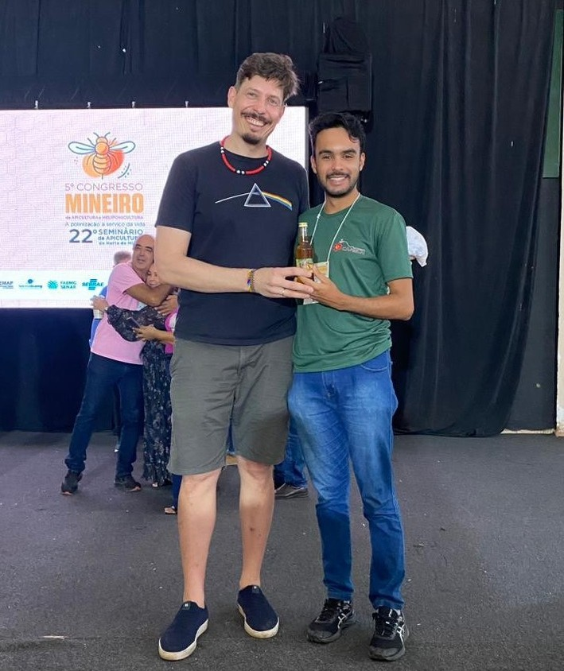

Guilherme Mota recebe 1º lugar em congresso mineiro com seu pôster sobre coloração floral e atração de abelhas
O trabalho "Muito além das pétalas: como as cores das anteras influenciam a atração de abelhas que vibram?", de autoria de Guilherme Victor Mota, Lorena Bueno Valadão Mendes, Ana Carolina Sabino de Oliveira, André Rodrigo Rech e Anselmo Nogueira, conquistou o primeiro lugar na sessão de pôsteres do 5º Congresso Mineiro de Apicultura e Meliponicultura e 22º Seminário de Apicultura do Norte de Minas, realizado em Montes Claros (MG). Conduzido em áreas de campo rupestre da Serra do Espinhaço (MG), o estudo analisou oito espécies do gênero Chamaecrista para investigar se a coloração das anteras atua como sinal visual de atratividade e honestidade floral para abelhas que vibram (Bombus pauloensis). A pesquisa evidenciou que a sinalização visual de recursos florais é complexa e se estende além da corola de pétalas, englobando também pistas sutis fornecidas pelas estruturas que produzem pólen. O projeto conta com apoio da FAPESP, Instituto Serrapilheira, UFABC, UFVJM, Liga Mineira de Polinização e dos laboratórios Cafesin e LIPA-UFABC.